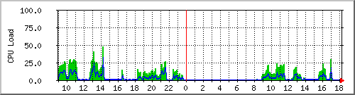
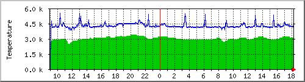

<!DOCTYPE html
    PUBLIC "-//W3C//DTD XHTML 1.0 Transitional//EN" "http://www.w3.org/TR/xhtml1/DTD/xhtml1-transitional.dtd">
<html xmlns="http://www.w3.org/1999/xhtml" xml:lang="ja" dir="ltr" lang="ja">

<head>
    <meta http-equiv="Content-Type" content="text/html; charset=UTF-8" />

    <link rel="stylesheet" href="../../styles.css" type="text/css" />

    <!-- disable viewport for mobile device -->
    <meta name="viewport"
        content="width=device-width,initial-scale=1.0,maximum-scale=2.0,minimum-scale=1.0,user-scalable=1" />

    <title>mrtgでネットワーク通信量,CPU負荷やPC各部の温度などをグラフ化。そのために必要なSNMP,lm_sensors,drivetempの設定も解説</title>
</head>

<body>
    <div id="container">
        <div id="layout_header_menu">
            <!-- page top menu line -->

            <ul>
                <li><a class="new_sec" href="https://oasis.halfmoon.jp/index.shtml" target="_self">Home</a></li>
                <li><a class="new_sec" href="https://oasis.halfmoon.jp/traveldia/index.html" target="_self">Travels</a>

                    <ul>
                        <li><a class="new_sub" href="https://oasis.halfmoon.jp/traveldia/index.html"
                                target="_self">Country List</a></li>
                        <li><a class="new_sub" href="http://www.youtube.com/user/inoue0111"
                                target="_self">動画(YouTube)</a></li>
                        <li><a class="new_sub_bottom" href="http://oasis-halfmoon.blogspot.com/"
                                target="_self">編集前旅行記(Blogger)</a></li>
                    </ul>
                </li>
                <li><a class="new_sec" href="https://oasis.halfmoon.jp/photo/index.html" target="_self">Photo</a>

                    <ul>
                        <li><a class="new_sub" href="https://oasis.halfmoon.jp/photo/index.html" target="_self">All Page
                                List</a></li>
                        <li><a class="new_sub" href="https://oasis.halfmoon.jp/traveldia/index.html"
                                target="_self">Country List</a></li>
                        <li><a class="new_sub_bottom" href="https://oasis.halfmoon.jp/about/index.html"
                                target="_self">利用許諾条件</a></li>
                    </ul>
                </li>
                <li><a class="new_sec" href="../../software/index.html" target="_self">Software</a>

                    <ul>
                        <li><a class="new_sub" href="../../software/index.html" target="_self">Software Main Page</a>
                        </li>
                        <li><a class="new_sub" href="https://oasis.halfmoon.jp/cgi-bin/websvn/"
                                target="_self">Subversion</a></li>
                        <li><a class="new_sub" href="https://github.com/oasis3855" target="_self">GitHub</a></li>
                        <li><a class="new_sub_bottom" href="http://code.google.com/u/101092603816443690725/"
                                target="_self">Google Code</a></li>
                    </ul>
                </li>
                <li><a class="new" href="https://oasis.halfmoon.jp/links/index.html" target="_self">Links</a></li>
            </ul>
        </div>
        <div id="layout_header_menu_line">
            <!-- Horizonal Line (Menu) -->
        </div>

        <div id="main_content_full">
            <!-- ********* CONTENTS START FROM HERE ********* -->

            <h1>mrtgでネットワーク通信量,CPU負荷やPC各部の温度などをグラフ化</h1>

            <p><a href="../../index.html">Home</a> &gt; <a href="../../software/index.html">Software</a> &gt; <a
                    href="../../software/software_server_memo.html">ソフトウエア開発・サーバ管理のメモ帳</a> &gt; このページ</p>

            <p style="text-align: right;">Last Update 2023/08/22</p>

            <div class="fig_center">
                <br />
            </div>

            <p>&nbsp;</p>

            <p>&nbsp;</p>

            <p>CPU負荷・温度・ネットワーク転送量などをマシンから読み出し、MRTGでグラフ化してhtmlファイルに出力する方法のメモ</p>

            <p>snmpd, lm_sensorsのセットアップと基本的な使い方も記している</p>

            <p>なお、Linuxマシンでは標準機能として簡単にセットアップできるが、Windowsマシンでは公式・非公式の各種ソフトウエアを組み合わせる必要があり少し敷居が高く一般的ではない<br />そのため、このページのWindows向け情報は2008年ごろで停止し更新を行っていない
            </p>

            <p>&nbsp;</p>

            <p>&nbsp;</p>

            <h4>もくじ</h4>

            <ul>
                <li><a href="#h3_snmp">SNMP</a>

                    <ul>
                        <li><a href="#h4_snmp_install">SNMPのインストール</a></li>
                        <li><a href="#h4_snmpd_setup">snmpdの設定</a></li>
                        <li><a href="#h4_snmptool_setup">snmpクライアントツールの初期設定</a></li>
                        <li><a href="#h4_snmpwalk">snmpwalkコマンドの使い方</a></li>
                        <li><a href="#m4_oid_mib_convert">OID, MIB 正引き, 逆引き</a></li>
                    </ul>
                </li>
                <li><a href="#h3_lmsensors">lm_sensors</a>

                    <ul>
                        <li><a href="#h4_lmsensors_install">lm_sensorsパッケージをインストール</a></li>
                        <li><a href="#h4_lmsensors_setup">lm_sensorsの初期設定</a></li>
                        <li><a href="#h4_lmsensors_customize">lm_sensorsの表示設定／カスタマイズ</a></li>
                        <li><a href="#read_from_sysdir">/sys 以下のファイルから値を直接読み取る</a></li>
                    </ul>
                </li>
                <li>
                    <a href="#h3_drivetemp">drivetemp

                        <ul>
                            <li><a href="#h4_hddtemp_2_drivetemp">hddtempは廃止され、drivetempカーネルモジュールに移行</a></li>
                            <li><a href="#h4_drivetemp_install">drivetempのテストとインストール</a></li>
                        </ul>
                    </a>
                </li>
                <li><a href="#h3_mrtg">MRTG</a>

                    <ul>
                        <li><a href="#h4_mrtg_install">MRTGのインストール</a></li>
                        <li><a href="#h4_mrtg_setup">mrtgの設定</a></li>
                        <li><a href="#mrtg_test_run">mrtgのテスト実行</a></li>
                        <li><a href="#h4_mrtg_cron_setup">cronでmrtgの自動実行を設定する</a></li>
                        <li><a href="#h4_mrtg_manual">MRTGの公式マニュアル</a></li>
                    </ul>
                </li>
                <li>
                    <a href="#h2_windows">Windowsマシンでの設定</a>（このセクションは2008年で更新停止）

                    <ul>
                        <li><a href="#h3_windows_mrtg">Windows SNMP サービスのインストール</a></li>
                        <li><a href="#h3_windows_snmp_ext">システム関連 のSNMPエージェント拡張</a></li>
                        <li><a href="#h3_windows_perl">Windows版Perlのインストール</a></li>
                        <li><a href="#h3_windows_mrtg">MRTGのインストール</a></li>
                        <li><a href="#h4_windows_mrtg_exec">MRTGの実行</a></li>
                        <li><a href="#h3_windows_cron">Windows 版 cron サービスをインストール</a></li>
                        <li><a href="#h3_windows_mib_browser">MIBブラウザ</a></li>
                        <li><a href="#h3_windows_mrtgcfg">mrtg.cfg の設定例と出力グラフのサンプル</a></li>
                    </ul>

                </li>
            </ul>

            <p>&nbsp;</p>

            <p>&nbsp;</p>

            <h2>Linuxマシンでの設定</h2>

            <p>検証環境 ： Ubuntu 22.04 （2023年8月現在の情報）</p>

            <h3 id="h3_snmp">SNMP</h3>

            <h4 id="h4_snmp_install">snmpdとsnmpツールのインストール</h4>

            <p>SNMPのサーバ機能だけをインストールする場合。mrtgのみの利用であれば、snmpdだけをインストールすれば事足りる</p>

            <pre>
$ <b>sudo apt install snmpd</b></pre>

            <p>SNMPの情報をコマンドラインから読み出すクライアント機能だけ場合</p>

            <p style="font-style: italic;">※ MIBを使わず、OIDだけでよいのならsnmp-mibs-downloaderのインストールは不要</p>

            <pre>
$ <b>sudo apt install snmp snmp-mibs-downloader</b></pre>

            <p>&nbsp;</p>

            <h4 id="h4_snmpd_setup">snmpdの設定</h4>

            <p>インストール直後のsnmpd.conf</p>

            <pre>
$ sudo cat /etc/snmp/snmpd.conf | grep -v ^# | grep -v ^$
sysLocation    Sitting on the Dock of the Bay
sysContact     Me &lt;me@example.org&gt;
sysServices    72
master  agentx
<span class="marker_orange">agentaddress  127.0.0.1,[::1]</span>
view   systemonly  included   .1.3.6.1.2.1.1
view   systemonly  included   .1.3.6.1.2.1.25.1
rocommunity  public default -V systemonly
rocommunity6 public default -V systemonly
rouser authPrivUser authpriv -V systemonly
includeDir /etc/snmp/snmpd.conf.d</pre>

            <p><span class="marker_orange">下線を引いた部分</span>で、loopback（自分自身）以外からのアクセス制限をしているが、他のPCの値を読み出したい場合はここを変更すればよい
            </p>

            <p>ネットワークの情報にアクセスするため、設定を加える必要がある。具体的には赤で着色した部分を加えるとネットワーク情報が得られる</p>

            <p>どのOIDサブツリーを有効化するかの参考資料としては、「<a class="link_external"
                    href="https://www.itmedia.co.jp/help/howto/linux/0007master/06/11.html">SNMPによるネットワークモニタリング</a>」（ITmedia
                エンタープライズ）が分かりやすい。OIDのリファレンスは「<a class="link_external" href="http://oidref.com/1.3.6.1">Reference record
                    for OID 1.3.6.1</a>」などを参照</p>

            <pre>
#  system + hrSystem groups only
view   systemonly  included   .1.3.6.1.2.1.1
view   systemonly  included   .1.3.6.1.2.1.25.1

##### add (from here)
<span style="color: red;"># interfaces
view   systemonly  included   .1.3.6.1.2.1.2
# at
view   systemonly  included   .1.3.6.1.2.1.3
# ip
view   systemonly  included   .1.3.6.1.2.1.4
# icmp
view   systemonly  included   .1.3.6.1.2.1.5
# tcp
view   systemonly  included   .1.3.6.1.2.1.6
# udp
view   systemonly  included   .1.3.6.1.2.1.7
# ucdavis
view   systemonly  included   .1.3.6.1.4.1.2021</span>
##### add (to here)
</pre>

            <p>snmpd.conf の編集が終了したら、snmpdを再起動する</p>

            <pre>
$ <b>sudo systemctl restart snmpd</b></pre>

            <p>&nbsp;</p>

            <h4 id="h4_snmptool_setup">snmpクライアントツールの初期設定</h4>

            <p>MIBを表示できるように、/etc/snmp/snmp.conf を修正する</p>

            <pre class="title">/etc/snmp/snmp.conf</pre>

            <pre>
# 修正前
#mibs :

# 修正後
<span style="color: red;">mibs ALL</span></pre>

            <p>snmpwalk実行時に次のようなエラー表示されることがある</p>

            <pre>
$ <b>snmpwalk -v1 localhost -c public network</b>
<span style="color: red;">Bad operator (INTEGER): At line 73 in /usr/share/snmp/mibs/ietf/SNMPv2-PDU</span>
End of MIB</pre>

            <p>これは、MIBの定義ファイル SNMPv2-PDU
                にエラーがあるため。Google検索すると、修正用ファイルが配布されているので、それを参考にして修正を行えばよい（野良ファイルなので、内容をよく吟味してから置き換えること）</p>

            <p>ここでは、ダウンロードした修正ファイルと現状の差分を表示している。これで良ければ、手動で修正すれば良い</p>

            <pre>
$ <b>wget -O SNMPv2-PDU http://pastebin.com/raw.php?i=p3QyuXzZ</b>

$ <b>diff -b ./SNMPv2-PDU /usr/share/snmp/mibs/ietf/SNMPv2-PDU</b>
73c73
< -- max-bindings INTEGER ::= 2147483647
---
> max-bindings INTEGER ::= 2147483647
100c100
<             INTEGER (0..2147483647),
---
>             INTEGER (0..max-bindings),
108,109c108,109
<         non-repeaters   INTEGER (0..2147483647),
<         max-repetitions INTEGER (0..2147483647),
---
>         non-repeaters   INTEGER (0..max-bindings),
>         max-repetitions INTEGER (0..max-bindings),
111,112c111
<             -- VarBindList
< 	    SEQUENCE (SIZE (0..2147483647)) OF VarBind
---
>             VarBindList
132c131
< -- VarBindList ::= SEQUENCE (SIZE (0..2147483647)) OF VarBind
---
> VarBindList ::= SEQUENCE (SIZE (0..max-bindings)) OF VarBind

$ <b>sudo cp ./SNMPv2-PDU /usr/share/snmp/mibs/ietf/SNMPv2-PDU</b></pre>

            <p>&nbsp;</p>

            <h4 id="h4_snmpwalk">snmpwalkコマンドの使い方</h4>

            <p>かんたんな使い方を次に示す</p>

            <p>全体表示、OIDの前方一致検索、OID/MIB表示の切り替え（-On スイッチ）、MIB完全一致検索は次のように行える</p>

            <pre>
$ <b>snmpwalk -v 2 -On localhost -c public</b>
.1.3.6.1.2.1.1.1.0 = STRING: Linux Ubuntu2204M720q 6.2.0-26-generic #26~22.04.1-Ubuntu SMP PREEMPT_DYNAMIC Thu Jul 13 16:27:29 UTC 2 x86_64
.1.3.6.1.2.1.1.2.0 = OID: .1.3.6.1.4.1.8072.3.2.10
.1.3.6.1.2.1.1.3.0 = Timeticks: (364331) 1:00:43.31
.1.3.6.1.2.1.1.4.0 = STRING: Me <me@example.org>
.1.3.6.1.2.1.1.5.0 = STRING: Ubuntu2204M720q
.1.3.6.1.2.1.1.6.0 = STRING: Sitting on the Dock of the Bay

〜 途中省略 〜

.1.3.6.1.2.1.25.1.5.0 = Gauge32: 1
.1.3.6.1.2.1.25.1.6.0 = Gauge32: 297
.1.3.6.1.2.1.25.1.7.0 = INTEGER: 0
.1.3.6.1.2.1.25.1.7.0 = No more variables left in this MIB View (It is past the end of the MIB tree)

$ <b>snmpwalk -v 1 -On localhost -c public 1.3.6.1.2.1.25</b>
.1.3.6.1.2.1.25.1.1.0 = Timeticks: (373933) 1:02:19.33
.1.3.6.1.2.1.25.1.2.0 = STRING: 2023-8-25,23:14:17.0,+9:0
.1.3.6.1.2.1.25.1.3.0 = INTEGER: 393216
.1.3.6.1.2.1.25.1.4.0 = STRING: "BOOT_IMAGE=/boot/vmlinuz-6.2.0-26-generic root=UUID=82a50900-6d82-4639-80c2-4c3e2caf2156 ro quiet splash vt.handoff=7
"
.1.3.6.1.2.1.25.1.5.0 = Gauge32: 1
.1.3.6.1.2.1.25.1.6.0 = Gauge32: 296
.1.3.6.1.2.1.25.1.7.0 = INTEGER: 0
End of MIB

$ <b>snmpwalk -v 1 localhost -c public 1.3.6.1.2.1.25</b>
HOST-RESOURCES-MIB::hrSystemUptime.0 = Timeticks: (380216) 1:03:22.16
HOST-RESOURCES-MIB::hrSystemDate.0 = STRING: 2023-8-25,23:15:20.0,+9:0
HOST-RESOURCES-MIB::hrSystemInitialLoadDevice.0 = INTEGER: 393216
HOST-RESOURCES-MIB::hrSystemInitialLoadParameters.0 = STRING: "BOOT_IMAGE=/boot/vmlinuz-6.2.0-26-generic root=UUID=82a50900-6d82-4639-80c2-4c3e2caf2156 ro quiet splash vt.handoff=7
"
HOST-RESOURCES-MIB::hrSystemNumUsers.0 = Gauge32: 1
HOST-RESOURCES-MIB::hrSystemProcesses.0 = Gauge32: 296
HOST-RESOURCES-MIB::hrSystemMaxProcesses.0 = INTEGER: 0
End of MIB

$ <b>snmpwalk -v 1 localhost -c public hrSystemUptime</b>
HOST-RESOURCES-MIB::hrSystemUptime.0 = Timeticks: (395668) 1:05:56.68</pre>

            <p>&nbsp;</p>

            <h4 id="m4_oid_mib_convert">OID, MIB 正引き, 逆引き</h4>

            <pre>
$ <b>snmptranslate -On UCD-DISKIO-MIB::diskIONWritten.9</b>
.1.3.6.1.4.1.2021.13.15.1.1.4.9

$ <b>snmptranslate .1.3.6.1.4.1.2021.13.15.1.1.6.9</b>
UCD-DISKIO-MIB::diskIOWrites.9</pre>

            <p>&nbsp;</p>

            <h4>よく使うOID, MIB</h4>

            <pre>
# CPUロードアベレージ（1分,5分,15分）, uptimeコマンドで表示されるもの
UCD-SNMP-MIB::laNames.1 (.1.3.6.1.4.1.2021.10.1.2.1) = STRING: Load-1
UCD-SNMP-MIB::laNames.2 (.1.3.6.1.4.1.2021.10.1.2.2) = STRING: Load-5
UCD-SNMP-MIB::laNames.3 (.1.3.6.1.4.1.2021.10.1.2.3) = STRING: Load-15
UCD-SNMP-MIB::laLoad.1 (.1.3.6.1.4.1.2021.10.1.3.1) = STRING: 0.77
UCD-SNMP-MIB::laLoad.2 (.1.3.6.1.4.1.2021.10.1.3.2) = STRING: 0.61
UCD-SNMP-MIB::laLoad.3 (.1.3.6.1.4.1.2021.10.1.3.3) = STRING: 0.50
UCD-SNMP-MIB::laLoadInt.1 (.1.3.6.1.4.1.2021.10.1.5.1) = INTEGER: 77
UCD-SNMP-MIB::laLoadInt.2 (.1.3.6.1.4.1.2021.10.1.5.2) = INTEGER: 61
UCD-SNMP-MIB::laLoadInt.3 (.1.3.6.1.4.1.2021.10.1.5.3) = INTEGER: 50


# CPU使用100分率（ユーザ, システム, アイドル状態）
UCD-SNMP-MIB::ssCpuUser.0 (.1.3.6.1.4.1.2021.11.9.0) = INTEGER: 15
UCD-SNMP-MIB::ssCpuSystem.0 (.1.3.6.1.4.1.2021.11.10.0) = INTEGER: 3
UCD-SNMP-MIB::ssCpuIdle.0 (.1.3.6.1.4.1.2021.11.11.0) = INTEGER: 80


# スワップメモリー 総容量, 空き容量
UCD-SNMP-MIB::memTotalSwap.0 (.1.3.6.1.4.1.2021.4.3.0) = INTEGER: 24389624 kB
UCD-SNMP-MIB::memAvailSwap.0 (.1.3.6.1.4.1.2021.4.4.0) = INTEGER: 24389624 kB
# 物理メモリー 総容量, 空き容量
UCD-SNMP-MIB::memTotalReal.0 (.1.3.6.1.4.1.2021.4.5.0) = INTEGER: 16108740 kB
UCD-SNMP-MIB::memAvailReal.0 (.1.3.6.1.4.1.2021.4.6.0) = INTEGER: 10598624 kB


# ドライブ, パーティションごとの読み書きサイズ、回数
UCD-DISKIO-MIB::diskIODevice.9 (.1.3.6.1.4.1.2021.13.15.1.1.2.9) = STRING: nvme0n1
UCD-DISKIO-MIB::diskIODevice.10 (.1.3.6.1.4.1.2021.13.15.1.1.2.10) = STRING: nvme0n1p1
… 省略
UCD-DISKIO-MIB::diskIONRead.9 (.1.3.6.1.4.1.2021.13.15.1.1.3.9) = Counter32: 1875687936
UCD-DISKIO-MIB::diskIONRead.10 (.1.3.6.1.4.1.2021.13.15.1.1.3.10) = Counter32: 604160
… 省略
UCD-DISKIO-MIB::diskIONWritten.9 (.1.3.6.1.4.1.2021.13.15.1.1.4.9) = Counter32: 559379456
UCD-DISKIO-MIB::diskIONWritten.10 (.1.3.6.1.4.1.2021.13.15.1.1.4.10) = Counter32: 0
… 省略
UCD-DISKIO-MIB::diskIOReads.9 (.1.3.6.1.4.1.2021.13.15.1.1.5.9) = Counter32: 38456
UCD-DISKIO-MIB::diskIOReads.10 (.1.3.6.1.4.1.2021.13.15.1.1.5.10) = Counter32: 48
… 省略
UCD-DISKIO-MIB::diskIOWrites.9 (.1.3.6.1.4.1.2021.13.15.1.1.6.9) = Counter32: 16673
UCD-DISKIO-MIB::diskIOWrites.10 (.1.3.6.1.4.1.2021.13.15.1.1.6.10) = Counter32: 0


# lm_sensorsで得られる各デバイスの温度
LM-SENSORS-MIB::lmTempSensorsDevice.1 (.1.3.6.1.4.1.2021.13.16.2.1.2.1) = STRING: wlp2s0_intel_ac3165_temp
… 省略
LM-SENSORS-MIB::lmTempSensorsDevice.9 (.1.3.6.1.4.1.2021.13.16.2.1.2.9) = STRING: nvme_wd_sn550_temp
LM-SENSORS-MIB::lmTempSensorsValue.1 (.1.3.6.1.4.1.2021.13.16.2.1.3.1) = Gauge32: 35000
… 省略
LM-SENSORS-MIB::lmTempSensorsValue.9 (.1.3.6.1.4.1.2021.13.16.2.1.3.9) = Gauge32: 37850
</pre>

            <p>&nbsp;</p>

            <p>&nbsp;</p>

            <h3 id="h3_lmsensors">lm_sensors</h3>

            <h4 id="h4_lmsensors_install">lm_sensorsパッケージをインストール</h4>

            <p>lm_sensorsパッケージは、M/Bのセンサーチップから値を読み出したり、PCIバス等を介してデバイスのセンサー値読みだすことが出来るソフトウエア</p>

            <p>まずインストールを行う</p>

            <pre>
$ <b>sudo apt install lm_sensors</b></pre>

            <p>&nbsp;</p>

            <h4 id="h4_lmsensors_setup">lm_sensorsの初期設定</h4>

            <p>パッケージをインストール後、セットアップ
                プログラム<code>sensors-detect</code>を実行する<br />どのセンサーから読み込み設定するかYES/NOの対話形式でセットアップが進められるが、基本的にはデフォルトオプションを全て選択（Enterキーを連打）して構わない
            </p>

            <p>YES/NOをすべてデフォルトオプションを選択する場合は、<code>--auto</code> スイッチを付けて実行しても良い</p>

            <p>なお、sensors-detectのマニュアルページには<span
                    class="marker_orange">「デフォルトオプションがNOである“推奨以外の”センサー読み出しを試すと、ハードウエアに致命的なダメージを与えることがある」</span>と書かれている
            </p>

            <pre>
$ <b>sensors-detect [--auto]</b></pre>

            <p>sensors-detectの実行が終わると、次のようなメッセージが表示される。<br />この例では<code>/etc/modules</code>に追加すべきドライバーが示されているので、これを追加すれば読み出せるセンサー項目が増える（はず）…
            </p>

            <pre class="title">sensors-detect実行時のメッセージ（最後の部分を抜粋）</pre>

            <pre>
Now follows a summary of the probes I have just done.
Just press ENTER to continue: 

Driver `coretemp':
    * Chip `Intel digital thermal sensor' (confidence: 9)

To load everything that is needed, add this to /etc/modules:
#----cut here----
<span style="color:red;"># Chip drivers
coretemp</span>
#----cut here----
If you have some drivers built into your kernel, the list above will
contain too many modules. Skip the appropriate ones!

Do you want to add these lines automatically to /etc/modules? (yes/NO)
            </pre>

            <p>&nbsp;</p>

            <h4 id="h4_lmsensors_customize">lm_sensorsの表示設定／カスタマイズ</h4>

            <p>ここまでで基本的設定が終わっているので、マシンを一旦再起動し、<code>sensors</code>コマンドでセンサー値一覧を表示してみる</p>

            <p>実行例</p>

            <pre>
$ <b>sensors</b>
coretemp-isa-0000
Adapter: ISA adapter
Package id 0:  +43.0°C  (high = +74.0°C, crit = +82.0°C)
Core 0:        +43.0°C  (high = +74.0°C, crit = +82.0°C)
Core 1:        +41.0°C  (high = +74.0°C, crit = +82.0°C)
Core 2:        +43.0°C  (high = +74.0°C, crit = +82.0°C)
Core 3:        +43.0°C  (high = +74.0°C, crit = +82.0°C)

acpitz-acpi-0
Adapter: ACPI interface
temp1:        +27.8°C  (crit = +119.0°C)

iwlwifi_1-virtual-0
Adapter: Virtual device
temp1:        +38.0°C  

nvme-pci-0100
Adapter: PCI adapter
Composite:  +38.9°C  (low  =  -5.2°C, high = +79.8°C)
                                (crit = +84.8°C)
            </pre>

            <p>より詳細に表示する場合は</p>

            <pre>
$ <b>sensors -u</b>
coretemp-isa-0000
Adapter: ISA adapter
Package id 0:
    temp1_input: 43.000
    temp1_max: 74.000
    temp1_crit: 82.000
    temp1_crit_alarm: 0.000
Core 0:

〜 途中省略 〜

temp1:
  temp1_input: 36.000

nvme-pci-0100
Adapter: PCI adapter
Composite:
  temp1_input: 38.850
  temp1_max: 79.850
  temp1_min: -5.150
  temp1_crit: 84.850
  temp1_alarm: 0.000
            </pre>

            <p>mrtgで温度を抜き出す場合、センサー名が一意になっている必要がある</p>

            <p>上に示した例では、<code>temp1</code>と表示されているものがマザーボード(acpitz-acpi-0)とwifiカード(iwlwifi_1-virtual-0)で<span
                    class="marker_orange">重複しており、mrtgからは見分けがつかない</span>
            </p>

            <p>そこで、センサー名をカスタマイズする</p>

            <p><code>/etc/sensors3.conf</code>を編集しても構わないのだが、パッケージがアップデートされるときに初期値に戻されてしまう<br />したがって、<code>/etc/sensors.d/</code>ディレクトリ内に新たなconfファイルを作成する
            </p>

            <pre class="title">/etc/sensors.d/acpitz.conf</pre>

            <pre>
chip "acpitz-acpi-0"
    label temp1 "MB_acpi_temp"</pre>

            <pre class="title">/etc/sensors.d/cpu.conf</pre>

            <pre>
chip "coretemp-isa-0000"
    label temp1 "cpu_package_temp"
    label temp2 "cpu_core0_temp"
    label temp3 "cpu_core1_temp"
    label temp4 "cpu_core2_temp"
    label temp5 "cpu_core3_temp"</pre>

            <pre class="title">/etc/sensors.d/iwlwifi.conf</pre>

            <pre>
chip "iwlwifi_1-virtual-0"
    label temp1 "wlp2s0_intel_ac3165_temp"</pre>

            <pre class="title">/etc/sensors.d/nvme-pci-0100.conf</pre>

            <pre>
chip "nvme-pci-0100"
    label temp1 "nvme_wd_sn550_temp"</pre>

            <p>labelは即時反映、温度の限界値を変更する<code>set</code>の反映には次のコマンドでset値を再読込する</p>

            <pre>
$ <b>sensors -s</b></pre>

            <p>最終的には次のような表示になった。これでmrtgから読みとることが出来るはずだ</p>

            <pre>
$ <b>sensors</b>
coretemp-isa-0000
Adapter: ISA adapter
cpu_package_temp:  +42.0°C  (high = +74.0°C, crit = +82.0°C)
cpu_core0_temp:    +42.0°C  (high = +74.0°C, crit = +82.0°C)
cpu_core1_temp:    +40.0°C  (high = +74.0°C, crit = +82.0°C)
cpu_core2_temp:    +43.0°C  (high = +74.0°C, crit = +82.0°C)
cpu_core3_temp:    +41.0°C  (high = +74.0°C, crit = +82.0°C)

acpitz-acpi-0
Adapter: ACPI interface
MB_acpi_temp:  +27.8°C  (crit = +119.0°C)

iwlwifi_1-virtual-0
Adapter: Virtual device
wlp2s0_intel_ac3165_temp:  +35.0°C  

nvme-pci-0100
Adapter: PCI adapter
nvme_wd_sn550_temp:  +37.9°C  (low  =  -5.2°C, high = +79.8°C)
                              (crit = +84.8°C)
            </pre>

            <p>次の記事も参考になる</p>

            <p>「CPUの温度やファンの回転数などをモニタするには」（＠IT）<br />
                <a class="link_external"
                    href="http://www.atmarkit.co.jp/flinux/rensai/linuxtips/743hwmonitor.html">http://www.atmarkit.co.jp/flinux/rensai/linuxtips/743hwmonitor.html</a>
            </p>

            <p>&nbsp;</p>

            <h4 id="read_from_sysdir">/sys 以下のファイルから値を直接読み取る</h4>

            <p>/sys/class/hwmon以下に、デバイス名と温度の値を格納したディレクトリへのリンクが格納されている</p>

            <pre>
$ <b>ll /sys/class/hwmon/</b>
drwxr-xr-x  2 root root 0 2023-08-25 14:40:08 ./
drwxr-xr-x 85 root root 0 2023-08-25 14:40:08 ../
lrwxrwxrwx  1 root root 0 2023-08-25 14:40:08 hwmon0 -> ../../devices/virtual/thermal/thermal_zone0/hwmon0/
lrwxrwxrwx  1 root root 0 2023-08-25 05:40:10 hwmon1 -> ../../devices/pci0000:00/0000:00:1b.0/0000:01:00.0/nvme/nvme0/hwmon1/
lrwxrwxrwx  1 root root 0 2023-08-25 05:40:10 hwmon2 -> ../../devices/platform/coretemp.0/hwmon/hwmon2/
lrwxrwxrwx  1 root root 0 2023-08-25 05:40:11 hwmon3 -> ../../devices/virtual/thermal/thermal_zone1/hwmon3/
lrwxrwxrwx  1 root root 0 2023-08-25 05:40:26 hwmon4 -> ../../devices/pci0000:00/0000:00:14.0/usb1/1-7/1-7:1.1/0003:046D:C534.0002/0003:046D:4023.0003/power_supply/hidpp_battery_0/hwmon4/
            </pre>

            <p>温度が格納されたファイルを、（上述のリンク先ではなく）実際のディレクトリで検索してみる</p>

            <pre>
$ <b>find /sys/ -name 'temp*_input' -print</b>
find: ‘/sys/kernel/tracing’: 許可がありません
find: ‘/sys/kernel/debug’: 許可がありません
/sys/devices/platform/coretemp.0/hwmon/hwmon2/temp3_input
/sys/devices/platform/coretemp.0/hwmon/hwmon2/temp4_input
/sys/devices/platform/coretemp.0/hwmon/hwmon2/temp1_input
/sys/devices/platform/coretemp.0/hwmon/hwmon2/temp5_input
/sys/devices/platform/coretemp.0/hwmon/hwmon2/temp2_input
/sys/devices/pci0000:00/0000:00:1b.0/0000:01:00.0/nvme/nvme0/hwmon1/temp1_input
/sys/devices/virtual/thermal/thermal_zone0/hwmon0/temp1_input
/sys/devices/virtual/thermal/thermal_zone1/hwmon3/temp1_input
find: ‘/sys/fs/pstore’: 許可がありません
find: ‘/sys/fs/bpf’: 許可がありません
            </pre>

            <p>temp*_input ファイルに温度が、name ファイルにデバイスの名前等が格納されている</p>

            <p>&nbsp;</p>

            <p>&nbsp;</p>

            <h3 id="h3_drivetemp">drivetemp</h3>

            <h4 id="h4_hddtemp_2_drivetemp">hddtempは廃止され、drivetempカーネルモジュールに移行</h4>

            <p>以前より使われていたhddtempはフェードアウトし、今後はdrivetempが使われるようになるとのこと</p>

            <blockquote>

                <p>hddtemp (0.3-beta15-54) unstable; urgency=medium</p>

                <p>hddtemp has been dead upstream for many years and is therefore in a minimal maintenance mode. It will
                    be shipped in the Debian Bullseye release, but will not be present in the Debian Bookworm release.
                </p>

                <p><span style="color: red;">Nowadays the 'drivetemp' kernel module is a better alternative.</span> It
                    uses the Linux Hardware Monitoring kernel API (hwmon), so the temperature is returned the same way
                    and using the same tools as other sensors.</p>

                <p>Loading this module is as easy as directory:</p>

                <p style="font-style: italic; font-weight: bold;">echo drivetemp &gt; /etc/modules-load.d/drivetemp.conf
                </p>

                <p>-- Aurelien Jarno &lt;aurel32@debian.org&gt; Tue, 02 Feb 2021 20:27:44 +0100</p>

                <p>https://sources.debian.org/src/hddtemp/0.3-beta15-54/debian/NEWS/</p>
            </blockquote>

            <p>linux-modules-extra-VERSION-generic
                パッケージに含まれるdrivetemp.koモジュールをロードすることで、S.M.A.R.Tから読み込むSATAドライブの温度も確認できるようになる</p>

            <p>&nbsp;</p>

            <h4 id="h4_drivetemp_install">drivetempのテストとインストール</h4>

            <p>drivetempを一時的に有効化する</p>

            <pre>
$ <b>sudo modprobe -v drivetemp</b></pre>

            <p>/sys ディレクトリに新たに追加される監視項目を確認する。前出の例「/sys 以下のファイルから読み取る」との差分を着色した</p>

            <p>ata1/host0/target0 が、/dev/sdaに接続したSATA SSDのデータ
            </p>

            <pre>
$ <b>find /sys/ -name 'temp*_input' -print</b>
find: ‘/sys/kernel/tracing’: 許可がありません
find: ‘/sys/kernel/debug’: 許可がありません
/sys/devices/platform/coretemp.0/hwmon/hwmon2/temp3_input
/sys/devices/platform/coretemp.0/hwmon/hwmon2/temp4_input
/sys/devices/platform/coretemp.0/hwmon/hwmon2/temp1_input
/sys/devices/platform/coretemp.0/hwmon/hwmon2/temp5_input
/sys/devices/platform/coretemp.0/hwmon/hwmon2/temp2_input
<span style="background-color: yellow; color: red;">/sys/devices/pci0000:00/0000:00:17.0/ata1/host0/target0:0:0/0:0:0:0/hwmon/hwmon5/temp1_input</span>
/sys/devices/pci0000:00/0000:00:1b.0/0000:01:00.0/nvme/nvme0/hwmon1/temp1_input
/sys/devices/virtual/thermal/thermal_zone0/hwmon0/temp1_input
/sys/devices/virtual/thermal/thermal_zone1/hwmon3/temp1_input
find: ‘/sys/fs/pstore’: 許可がありません
find: ‘/sys/fs/bpf’: 許可がありません

$ <b>cat /sys/devices/pci0000:00/0000:00:17.0/ata1/host0/target0:0:0/0:0:0:0/hwmon/hwmon5/name</b>
drivetemp

$ <b>cat /sys/devices/pci0000:00/0000:00:17.0/ata1/host0/target0:0:0/0:0:0:0/hwmon/hwmon5/temp1_input</b>
33000

$ <b>cat /sys/devices/pci0000:00/0000:00:17.0/ata1/host0/target0:0:0/0:0:0:0/hwmon/hwmon5/device/model</b>
CSSD-S6B960CG3VX
</pre>

            <p>後ろ3桁のゼロを取れば、mrtgの入力にできる。もしくは、（drivetempをLinux起動時にロードすれば）sensorsコマンドでも出力できる</p>

            <pre>
$ <b>cat /sys/devices/pci0000:00/0000:00:17.0/ata1/host0/target0:0:0/0:0:0:0/hwmon/hwmon5/temp1_input \
    | awk '{print substr($0, 1, length($0)-3)}'</b>
33</pre>

            <p>この値をmrtgで利用する場合は、Debianのドキュメントに書かれている通り、Linux起動時にカーネルモジュールを読み込むよう次のように設定する</p>

            <pre>$ <b>sudo sh -c "echo drivetemp > /etc/modules-load.d/drivetemp.conf"</b></pre>

            <p>&nbsp;</p>

            <p>&nbsp;</p>

            <h3 id="h3_mrtg">MRTG</h3>

            <h4 id="h4_mrtg_install">MRTGのインストール</h4>

            <p>mrtgはPerlを使っているため、Perlがインストールされていることが前提となる</p>

            <pre>
$ <b>sudo apt install mrtg</b></pre>

            <p>&nbsp;</p>

            <h4 id="h4_mrtg_setup">mrtgの設定</h4>

            <p>インストール直後の設定ファイルは次のような内容となっている</p>

            <pre class="title">/etc/mrtg/mrtg.cfg</pre>

            <pre>
# Global configuration
WorkDir: /var/www/html/mrtg

# Put your rules below or run cfgmaker(1)</pre>

            <p>設定ファイルを自動で作成するスクリプトを実行する</p>

            <pre>
$ <b>cfgmaker public@localhost</b>
--base: Get Device Info on public@localhost:
--base: Vendor Id: Unknown Vendor - 1.3.6.1.4.1.8072.3.2.10
--base: Populating confcache
--base: Get Interface Info
--base: Walking ifIndex
--snpd:   public@localhost: -> 1 -> ifIndex = 1
--snpd:   public@localhost: -> 2 -> ifIndex = 2
--snpd:   public@localhost: -> 3 -> ifIndex = 3
--base: Walking ifType
--snpd:   public@localhost: -> 1 -> ifType = 24
--snpd:   public@localhost: -> 2 -> ifType = 6
--snpd:   public@localhost: -> 3 -> ifType = 6
--base: Walking ifAdminStatus
--snpd:   public@localhost: -> 1 -> ifAdminStatus = 1
--snpd:   public@localhost: -> 2 -> ifAdminStatus = 1
--snpd:   public@localhost: -> 3 -> ifAdminStatus = 1
--base: Walking ifOperStatus
--snpd:   public@localhost: -> 1 -> ifOperStatus = 1
--snpd:   public@localhost: -> 2 -> ifOperStatus = 2
--snpd:   public@localhost: -> 3 -> ifOperStatus = 1
--base: Walking ifMtu
--snpd:   public@localhost: -> 1 -> ifMtu = 65536
--snpd:   public@localhost: -> 2 -> ifMtu = 1500
--snpd:   public@localhost: -> 3 -> ifMtu = 1500
--base: Walking ifSpeed
--snpd:   public@localhost: -> 1 -> ifSpeed = 10000000
--snpd:   public@localhost: -> 2 -> ifSpeed = 0
--snpd:   public@localhost: -> 3 -> ifSpeed = 0
# Created by 
# /usr/bin/cfgmaker public@localhost


### Global Config Options

#  for UNIX
# WorkDir: /home/http/mrtg

#  for NT
# WorkDir: c:\mrtgdata

#  for several Linux, like Debian, RHEL and it's derivatives
WorkDir: /var/www/html/mrtg

#  for others Linux
# WorkDir: /srv/http/mrtg

### Global Defaults

#  to get bits instead of bytes and graphs growing to the right
# Options[_]: growright, bits

EnableIPv6: no

######################################################################
# System: Ubuntu2204M720q
# Description: Linux Ubuntu2204M720q 6.2.0-26-generic #26~22.04.1-Ubuntu SMP PREEMPT_DYNAMIC Thu Jul 13 16:27:29 UTC 2 x86_64
# Contact: Me <me@example.org>
# Location: Sitting on the Dock of the Bay
######################################################################


### Interface 1 &gt;&gt; Descr: 'lo' | Name: 'No Name' | Ip: '127.0.0.1' | Eth: 'No Ethernet Id' ###
### The following interface is commented out because:
### * it is a Software Loopback interface
# 
# Target[localhost_1]: 1:public@localhost:
# SetEnv[localhost_1]: MRTG_INT_IP="127.0.0.1" MRTG_INT_DESCR="lo"
# MaxBytes[localhost_1]: 1250000
# Title[localhost_1]: Traffic Analysis for 1 -- Ubuntu2204M720q
# PageTop[localhost_1]: &lt;h1&gt;Traffic Analysis for 1 -- Ubuntu2204M720q&lt;/h1&gt;
# 		&lt;div id="sysdetails"&gt;

〜 途中省略 〜

### Interface 3 &gt;&gt; Descr: 'wlp2s0' | Name: 'No Name' | Ip: '192.168.1.102' | Eth: '24-ee-9a-b4-61-12' ###
### The following interface is commented out because:
### * has no ifSpeed property
# 
# Target[localhost_3]: 3:public@localhost:
# SetEnv[localhost_3]: MRTG_INT_IP="192.168.1.102" MRTG_INT_DESCR="wlp2s0"
# MaxBytes[localhost_3]: 0
# Title[localhost_3]: Traffic Analysis for 3 -- Ubuntu2204M720q
# PageTop[localhost_3]: &lt;h1&gt;Traffic Analysis for 3 -- Ubuntu2204M720q&lt;/h1&gt;
# 		&lt;div id="sysdetails"&gt;
# 			&lt;table&gt;
# 				&lt;tr&gt;
# 					&lt;td&gt;System:&lt;/td&gt;
# 					&lt;td&gt;Ubuntu2204M720q in Sitting on the Dock of the Bay&lt;/td&gt;
# 				&lt;/tr&gt;
# 				&lt;tr&gt;
# 					&lt;td&gt;Maintainer:&lt;/td&gt;
# 					&lt;td&gt;Me &lt;me@example.org&gt;&lt;/td&gt;
# 				&lt;/tr&gt;
# 				&lt;tr&gt;
# 					&lt;td&gt;Description:&lt;/td&gt;
# 					&lt;td&gt;wlp2s0  &lt;/td&gt;
# 				&lt;/tr&gt;
# 				&lt;tr&gt;
# 					&lt;td&gt;ifType:&lt;/td&gt;
# 					&lt;td&gt;ethernetCsmacd (6)&lt;/td&gt;
# 				&lt;/tr&gt;
# 				&lt;tr&gt;
# 					&lt;td&gt;ifName:&lt;/td&gt;
# 					&lt;td&gt;No Name&lt;/td&gt;
# 				&lt;/tr&gt;
# 				&lt;tr&gt;
# 					&lt;td&gt;Max Speed:&lt;/td&gt;
# 					&lt;td&gt;0.0 Bytes/s&lt;/td&gt;
# 				&lt;/tr&gt;
# 				&lt;tr&gt;
# 					&lt;td&gt;Ip:&lt;/td&gt;
# 					&lt;td&gt;192.168.1.102 (Ubuntu2204M720q)&lt;/td&gt;
# 				&lt;/tr&gt;
# 			&lt;/table&gt;
# 		&lt;/div&gt;
</pre>

            <p>自動で作成（画面表示）された設定ファイルの内容から、今回必要なWifiインターフェース部分をコピペし、さらにCPUとNVMe
                SSDの温度をsensorsから読み取るものを追加して、サンプル設定ファイルを作成したのが次の例</p>

            <pre class="title">/etc/mrtg/mrtg.cfg</pre>

            <pre>
WorkDir: /var/www/html/mrtg
Options[_]: growright, bits
EnableIPv6: no

### Interface 3 >> Descr: 'wlp2s0' | Name: 'No Name' | Ip: '192.168.1.102' | Eth: '24-ee-9a-b4-61-12' ###
### The following interface is commented out because:
### * has no ifSpeed property
# 
Target[localhost_3]: 3:public@localhost:
SetEnv[localhost_3]: MRTG_INT_IP="192.168.1.102" MRTG_INT_DESCR="wlp2s0"
MaxBytes[localhost_3]: 100000000
Title[localhost_3]: Traffic Analysis for wlp2s0 -- Ubuntu2204M720q
PageTop[localhost_3]: Traffic Analysis for wlp2s0 -- Ubuntu2204M720q

### CPU and NVMe SSD temperature
Target[temperature]: `/usr/bin/sensors | grep -e 'cpu_package_temp' -e 'nvme_wd_sn550_temp' | awk '{print $2}' | sed -e 's/+//' -e 's/[^0-9+\.].*//'`
MaxBytes[temperature]: 100
Title[temperature]: CPU and NVMe disk Temperature
PageTop[temperature]: CPU and NVMe disk Temperature
Options[temperature]: growright,absolute,gauge,nopercent,noinfo
WithPeak[temperature]: ymw
#unscaled[temperature]: dwmy
YLegend[temperature]: Temperature
ShortLegend[temperature]: C
LegendI[temperature]: CPU
LegendO[temperature]: NVMe disk
Legend1[temperature]: CPU
Legend2[temperature]: NVMe disk
            </pre>

            <p><a class="link_external"
                    href="https://oss.oetiker.ch/mrtg/doc/mrtg-reference.en.html">MRTGのマニュアル</a>によれば、Target
                キーワードに外部コマンドを用いる場合は、次のようなフォーマットにする必要がある</p>
            <blockquote>

                <p>If you want to monitor something which does not provide data via snmp you can use some external
                    program to do the data <br />
                    The external command must return 4 lines of output:</p>

                <ul>
                    <li>Line 1 : current state of the first variable, normally 'incoming bytes count'
                    </li>
                    <li>Line 2 : current state of the second variable, normally 'outgoing bytes count'</li>
                    <li>Line 3 : string (in any human readable format), telling the uptime of the target.</li>
                    <li>Line 4 : string, telling the name of the target.</li>
                </ul>

                <p>Depending on the type of data your script returns you might want to use the 'gauge' or 'absolute'
                    arguments for the Options keyword.</p>

                <p>Example:</p>

                <p>Target[myrouter]: `/usr/local/bin/df2mrtg /dev/dsk/c0t2d0s0`</p>

                <p>Note the use of the backticks (`), not apostrophes (') around the command.</p>
            </blockquote>

            <p>mrtg.cfgの設定により複数のhtmlページが作成される場合、それらにリンクを張ったindex.htmlを自動的に作成するスクリプトを実行する</p>

            <pre>
$ <b>sudo -u mrtg sh -c "indexmaker /etc/mrtg/mrtg.cfg > /var/www/html/mrtg/index.html"</b></pre>

            <p>&nbsp;</p>

            <h4 id="mrtg_test_run">mrtgのテスト実行</h4>

            <p>設定が終わればコマンドラインでテスト実行を行い、エラーメッセージが出ないか確認する<br />次の例では、html等を出力するWorkDir
                (/var/www/html/mrtg)のオーナーがユーザ名mrtgなので、sudoで実行ユーザを強制（<code>-u mrtg</code>）して実行している
            </p>

            <pre>
$ <b>sudo -u mrtg sh -c "LANG=C mrtg /etc/mrtg/mrtg.cfg"</b></pre>

            <p>/etc/mrtg/ 内にロック ファイルが、/var/www/html/mrtg/ 内に各種データファイルが作成されるが、<span
                    class="marker_orange">実行時の毎回ユーザが違うと、上書き不能エラーとなる可能性がある</span>。ここでは ユーザを
                mrtg で固定して行っている（sudo -u mrtg …）</p>

            <p>&nbsp;</p>

            <h4 id="h4_mrtg_cron_setup">cronでmrtgの自動実行を設定する</h4>

            <p>MRTGを5分ごとに起動させるための設定は、<a class="link_external"
                    href="https://oss.oetiker.ch/mrtg/doc/mrtg-unix-guide.en.html">公式マニュアル</a>では次のように記載すればよいと書かれている</p>

            <blockquote>

                <p>if you live in Linux Land the line may look like this if you are using crontab -e</p>

                <pre>
*/5 * * * *  &lt;mrtg-bin&gt;/mrtg &lt;path to mrtg-cfg&gt;/mrtg.cfg \
    --logging /var/log/mrtg.log</pre>

                <p>or like this if you use /etc/crontab</p>

                <pre>
*/5 * * * *  mrtg-user  &lt;mrtg-bin&gt;/mrtg &lt;path to mrtg-cfg&gt;/mrtg.cfg \
    --logging /var/log/mrtg.log</pre>
            </blockquote>

            <p>実際に、ここでの設定参考例は次のようなものになる<br />（crontabコマンドで編集したファイルは /var/spool/cron/crontabs/root に格納される）</p>

            <p>タスクの最後に &gt;/dev/null 2&gt;&amp;1 を付けているのは、mrtgがテキストデータを標準出力・エラー出力に返したときに、cronがメールを送信するのを阻止するため</p>

            <pre class="title">$ <b>sudo crontab -u root -e</b></pre>

            <pre>
*/5 * * * * mrtg LANG=C LC_ALL=C /usr/bin/mrtg /etc/mrtg/mrtg.cfg > /dev/null 2>&1</pre>

            <p>グラフを見るには、Apacheが走っている場合は</p>

            <pre>
http://localhost/mrtg/index.html</pre>

            <p>そうでない場合は、直接ファイルを見に行く</p>

            <pre>
file:///var/www/mrtg/index.html</pre>

            <p>&nbsp;</p>

            <h4 id="h4_mrtg_manual">MRTGの公式マニュアル</h4>

            <p><a class="link_external" href="https://oss.oetiker.ch/mrtg/">Tobi Oetiker's MRTG - The Multi Router
                    Traffic Grapher</a></p>

            <p>&nbsp;</p>

            <p>&nbsp;</p>

            <h2 id="h2_windows">Windowsマシンでの設定</h2>

            <p>検証環境 ： Windows Vista, 7 （このセクションより下は2008年当時の情報）</p>

            <h3 id="h3_windows_mrtg">Windows SNMP サービスのインストール</h3>

            <p><br />
                Windows XP 系 の場合 はWindowsコンポーネントの追加と削除からSNMPを有効化する</p>

            <p><br />
                Windows 7/8/10 系 の場合 は Windowsの機能からSNMPを有効化する</p>

            <p>サービスを自動起動させるよう設定する</p>

            <p></p>

            <p>Windows 7/8/10系の場合は、サービス名を右クリックしてプロパティを表示し、コミュニティ名を設定する必要性がある。（通常、コミュニティ名はpublicとする）</p>

            <p></p>

            <p>Windows標準のSNMPエージェントで得られるのは MIB-2, RFC1514など。ハードウエアの状態などは得られない。</p>

            <p>&nbsp;</p>

            <h4 id="h3_windows_snmp_ext">システム関連 のSNMPエージェント拡張</h4>

            <p>CPUの負荷状態やメモリーの利用状況、ハードディスクの容量などを得るためのSNMPエージェント拡張機能をインストールする。</p>

            <p>Windows NT系に対応したフリーのもので、よく使われているものは次の2つくらいか</p>

            <ul>
                <li><a class="link_external" href="http://www.snmp-informant.com/">SNMP Informant Standard
                        (http://www.snmp-informant.com/)</a></li>
                <li><a class="link_external" href="http://www.snmp4tpc.com/snmp4w2k.htm">SNMP4W2K Standard
                        (http://www.snmp4tpc.com/snmp4w2k.htm)</a></li>
            </ul>

            <p>どちらか一つを入れればよい。</p>

            <p>CPU温度などをSNMP経由で得たい場合は</p>

            <p><a class="link_external" href="http://cowscorpion.com/CPU/MBM.html">MBM (Motherboard Monitor) </a>用の拡張機能の
                <a class="link_external" href="http://www.wtcs.org/informant/products.htm#MBM">SNMP Informant-MBM
                    (http://www.wtcs.org/informant/products.htm)</a>をインストールする。
            </p>

            <p>なお、MBMは2004年に開発と配布が終了しているらしい。</p>

            <p>SpeedFan 用の拡張も配布されている。</p>

            <p><a class="link_external" href="http://code.bastart.eu.org/projects/sfsnmp/">SpeedFan SNMP Extension
                    (http://code.bastart.eu.org/projects/sfsnmp/)</a></p>

            <p>MIBが配布されていないので、OIDを直接叩く以外に無い。</p>

            <p>CPU温度などの温度センサーは次のOIDに割り付けられている。<br />
                .1.3.6.1.4.1.16.0.1.x　　(x=0,1,2...)</p>

            <p>Windows 7/8/10系のUAC制御でSpeedFanとMRTGの実行ユーザが違う場合、SNMP経由でうまく取り込めません。SpeedFanのログファイルを用いてデータを取り込むプログラムを<a
                    class="link_orange"
                    href="https://github.com/oasis3855/windows_misc_program/tree/main/speedfan_to_mrtg">公開しています
                    （sf2mrtg）</a>。</p>

            <p>&nbsp;</p>

            <h3 id="h3_windows_perl">Windows版Perlのインストール</h3>

            <p>MRTGはPerlで書かれているため、Perlの実行環境を整える。</p>

            <p><a class="link_external" href="http://aspn.activestate.com/ASPN/Downloads/ActivePerl/">Active Perl
                    (http://aspn.activestate.com/ASPN/Downloads/ActivePerl/)</a></p>

            <p>&nbsp;</p>

            <h3 id="h3_windows_mrtg">MRTGのインストール</h3>

            <p><a class="link_external" href="http://www.mrtg.jp/doc/">MRTGの入手と日本語ドキュメント (http://www.mrtg.jp/doc/)</a>
            </p>

            <p>Windows用zipファイルをダウンロードして、C:\Program Filesに解凍する。</p>

            <p>mrtg.cfgを自分で作成しない場合は、自マシンのNIC情報のみを付加したmrtg.cfgを自動生成させることも出来る。<br />
                ※ MRTGのログデータを格納するフォルダ名には、空白が入ってはいけないようだ。</p>

            <pre class="title">cfgmaker による mrtg.cfg 自動作成方法</pre>

            <pre>
c:\Program Files\mrtg-2.15.0\bin&gt;<b><span style="color:red;">perl 
cfgmaker public@localhost --global &quot;WorkDir: c:\mrtg&quot; --output 
mrtg.cfg</span></b>
--base: Get Device Info on public@localhost:
--base: Vendor Id:
--base: Populating confcache
--coca: populate confcache public@localhost:
--coca: store in confcache public@localhost_ Descr MS TCP Loopback 
interface --&gt; 1
--coca: store in confcache public@localhost_ Descr Marvell Yukon 88E8053 
PCI-E Gigabit Ethernet Controller #2 --&gt; 65539
--coca: store in confcache public@localhost_ Type 24 --&gt; 1
--coca: store in confcache public@localhost_ Type 6 --&gt; 65539
--coca: store in confcache public@localhost_ Ip 127.0.0.1 --&gt; 1
--coca: store in confcache public@localhost_ Ip 192.168.1.10 --&gt; 
65539
--coca: store in confcache public@localhost_ Eth --&gt; 1
--coca: store in confcache public@localhost_ Eth 00-01-80-61-00-00 
--&gt; 65539
--base: Get Interface Info
--base: Walking ifIndex
--base: Walking ifType
--base: Walking ifAdminStatus
--base: Walking ifOperStatus
--base: Walking ifMtu
--base: Walking ifSpeed
--base: Writing mrtg.cfg
            </pre>

            <p>自動作成で出来るファイルは次のようなものなので、これと同じ書式にしたがって自分でmrtg.cfgを作ってもよい</p>

            <pre class="title">c:\Program Files\mrtg-2.15.0\bin\mrtg.cfg</pre>

            <pre>
# Created by
# cfgmaker public@localhost --global &quot;WorkDir: h:\mrtg&quot; --output mrtg.cfg
    
### Global Config Options
    
# for UNIX
# WorkDir: /home/http/mrtg
    
# or for NT
WorkDir: c:\mrtg
    
### Global Defaults
# to get bits instead of bytes and graphs growing to the right
# Options[_]: growright, bits
    
EnableIPv6: no
    
Target[localhost_65539]: 65539:public@localhost:
SetEnv[localhost_65539]: MRTG_INT_IP=&quot;192.168.1.10&quot; 
MRTG_INT_DESCR=&quot;Marvell-Yukon-88E8053-PCI-E-Gigabit-Ethernet-Controller-#2&quot;
MaxBytes[localhost_65539]: 12500000
Title[localhost_65539]: Network Interface
PageTop[localhost_65539]: Network Interface
            </pre>

            <p>&nbsp;</p>

            <h4 id="h4_windows_mrtg_exec">MRTGの実行</h4>

            <p>MRTG本体のあるフォルダで実行する。</p>

            <pre>
c:\Program Files\mrtg-2.15.0\bin&gt;<b><span style="color:red;">perl mrtg mrtg.cfg</span></b>
            </pre>

            <p>&nbsp;</p>

            <h3 id="h3_windows_cron">Windows 版 cron サービスをインストール</h3>

            <p>Windows 版 cron サービスをインストールする。<br />
                <a class="link_external" href="http://www.kalab.com/freeware/cron/cron.htm">Cron NT service
                    (http://www.kalab.com/freeware/cron/cron.htm)</a>
            </p>

            <p>インストーラがインストール先のフォルダ名を聞いてくるので、（たとえば）c:\Windows\system32 にインストールする。<br />
                アンインストール用のショートカットなどは「全く」作成されない。インストールしたフォルダでcmd.exeを開き<code> crons.exe /? </code>と実行すれば取り得るオプションが表示される。
            </p>

            <p>Linuxと同じく、1分おきにcrontabを確認しに来るので、crons.exeがあるフォルダに <br />
                crontab ファイルを作成する。</p>

            <pre class="title">c:\Windows\system32\crontab</pre>

            <pre>
0,5,10,15,20,25,30,35,40,45,50,55 * * * * cron-mrtg-run.cmd
            </pre>

            <p>※ */5 のような記述はシンタックスエラーになる。完全にLinux互換とはいかない様だ...</p>

            <p>なお、実行するコマンドは次のようなスクリプトファイルにまとめている。</p>

            <pre class="title">c:\Windows\system32\crontab</pre>

            <pre>
cd c:\Program Files\mrtg-2.15.0\bin
perl mrtg mrtg.cfg
            </pre>

            <p>&nbsp;</p>

            <h3 id="h3_windows_mib_browser">MIBブラウザ</h3>

            <p>Windowsには snmpwalk コマンド等の SNMP を扱うプログラムが標準では提供されていない。<br />
                GUIでMIBのOIDツリーを眺められる次のようなツールを使う。</p>

            <p><a class="link_external" href="http://www.wtcs.org/informant/free_snmp_tools.htm">GetIf SNMP MIB Browser
                    (http://www.wtcs.org/informant/free_snmp_tools.htm)</a><br />
                インストールしたら、GetIfのフォルダ内に「mibs」というサブフォルダが作成される。ここに、SNMP Informant や SNMP4W2K のインストールフォルダから
                MIBツリーの定義ファイルをコピーする。<br />
                ※ コピーしない場合は、何のキーワードも表示されないだけで、データ自体は参照できる。</p>

            <p></p>

            <p>Host Name に、ターゲットのアドレスを入力 （自マシンの場合は localhost） して Enter キーを押す</p>

            <p></p>

            <p>MBrowser タブに移り、OIDツリーをたどって必要な項目を表示（①）させて enter キーを押す。<br />
                SNMP経由でレスポンスが返ってきたら、必要な項目をクリック（②）して、enter キーを押す。<br />
                そうすると、OIDの識別値が ③ に表示される。</p>

            <p>OIDを直接指定してSNMPエージェントから値を得るだけなら、マイクロソフト純正のツールがある。<br />
                SnmpUtilG というソフトが、Windows 2000 Resource Kit や Windows XP Support Tool として配布されている。</p>

            <p>&nbsp;</p>

            <h3 id="h3_windows_mrtgcfg">mrtg.cfg の設定例と出力グラフのサンプル</h3>

            <p>たとえば、CPU負荷のグラフを描かせたい場合は、次のような設定を追加する。（SNMP4W2Kの場合）</p>

            <pre class="title">c:\Program Files\mrtg-2.15.0\bin\mrtg.cfg</pre>

            <pre>
# SNMP4W2Kを用いる場合
Target[cpuload]: 
1.3.6.1.4.1.311.1.1.3.1.1.2.1.3.1.48&amp;1.3.6.1.4.1.311.1.1.3.1.1.2.1.4.1.48:public@localhost:
MaxBytes[cpuload]: 100
Title[cpuload]: CPU Load Log (MRTG)
PageTop[cpuload]: CPU Load Log
Options[cpuload]: growright,absolute,gauge,nopercent,unknaszero,integer
WithPeak[cpuload]: ymw
Unscaled[cpuload]: dwmy
YLegend[cpuload]: CPU Load
ShortLegend[cpuload]: %
LegendI[cpuload]: System
LegendO[cpuload]: User
Legend1[cpuload]: System
Legend2[cpuload]: User
            </pre>

            <p></p>

            <p>SpeedFanで温度変化のグラフを描かせたい場合は、次のような設定を追加する。</p>

            <pre class="title">c:\Program Files\mrtg-2.15.0\bin\mrtg.cfg</pre>

            <pre>
# sf2mrtg を用いる場合
Target[temp]: `C:\Program Files\SpeedFan\sf2mrtg\sf2mrtg.exe`
# SpeedFan SNMP Extension を用いる場合
# Target[temp]: 1.3.6.1.4.1.16.0.1.0&amp;1.3.6.1.4.1.16.0.1.1:public@localhost:
MaxBytes[temp]: 6000
Title[temp]: System Temperature Log (MRTG)
PageTop[temp]: System Temperature Log
Options[temp]: growright,absolute,gauge,nopercent,unknaszero,integer
WithPeak[temp]: ymw
Unscaled[temp]: dwmy
YLegend[temp]: Temperature
ShortLegend[temp]: deg-C x 100
LegendI[temp]: System Temp
LegendO[temp]: CPU Temp
Legend1[temp]: System Temp
Legend2[temp]: CPU Temp
            </pre>

            <p></p>

            <p>MRTG の cfgmaker で作成されたネットワークの負荷を監視するグラフは次のようになる。</p>

            <pre class="title">c:\Program Files\mrtg-2.15.0\bin\mrtg.cfg</pre>

            <pre>
Target[network]: 65539:public@localhost:
SetEnv[network]: MRTG_INT_IP="192.168.1.1" MRTG_INT_DESCR="Marvell-Yukon-88E8053-PCI-E-Gigabit-Ethernet-Controller"
MaxBytes[network]: 62500
Title[network]: Network Interface Log (MRTG)
PageTop[network]: Network Interface
Options[network]: growright,nopercent,unknaszero,bits
            </pre>

            <p></p>

            <p>&nbsp;</p>

            <p>&nbsp;</p>

            <!-- HTML本文ここまで（貼付ここまで） -->

            <!-- ********* CONTENTS END AT THIS LINE ********* -->
        </div>
        <div id="layout_footer">
            <div id="layout_footer_left">

                <p style="text-align:left;"><a href="http://validator.w3.org/" target="_self"></a>
                    &nbsp;Last update on 22 August 2023<br />
                    &nbsp;Powered by GitHub Pages<br clear="all" />
                </p>
            </div>

            <div id="layout_footer_right">

                <p style="text-align:right;"><a href="http://creativecommons.org/licenses/by-nc-nd/2.1/jp/"
                        target="_self"></a>
                    <a href="/about/index.html" target="_self">Copyright (C) INOUE Hirokazu.</a>&nbsp;<br />For
                    <i>commercial usage</i> ? See detail at <a href="/about/index.html"
                        target="_self">HERE</a>.&nbsp;<br clear="all" />
                </p>
            </div>
        </div>
    </div>
</body>

</html>